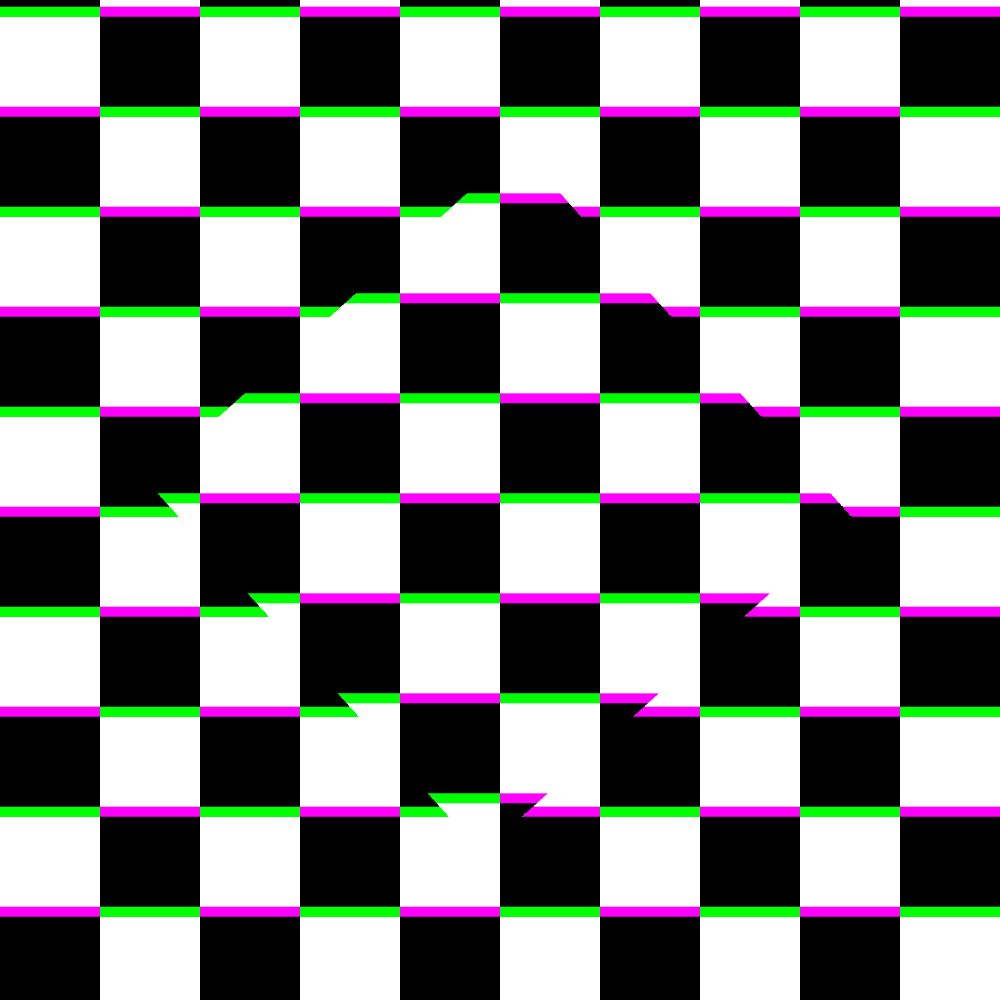

I am DJ 5milez
I am a developer currently learning through the Odin Project
I am curently working on
A reworking of an old phone script for Grand Theft Auto V FiveM servers
The foundation course of The Odin Project

I am a developer currently learning through the Odin Project
A reworking of an old phone script for Grand Theft Auto V FiveM servers
The foundation course of The Odin Project